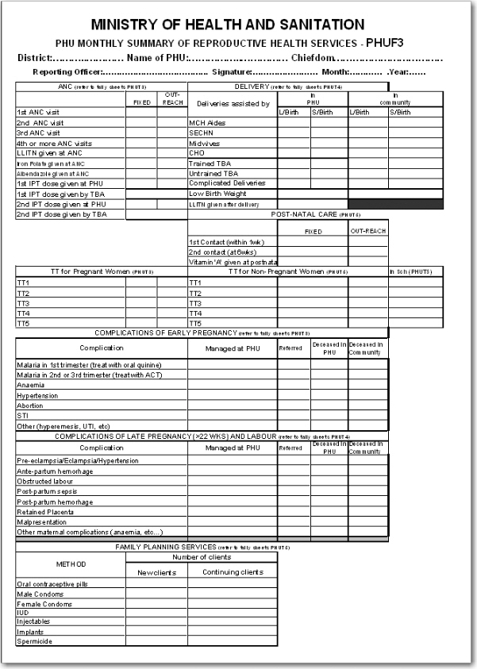

Typically the design of a DHIS 2 dataset is based on some requirements from a paper form that is already in use. The logic of paper forms are not the same as the data element and data set model of DHIS, e.g. often a field in a tabular paper form is described both by column headings and text on each row, and sometimes also with some introductory table heading that provides more context. In the database this is captured in one atomic data element with no reference to a position in a visual table format, so it is important to make sure the data element with the optional data element categories capture the full meaning of each individual field in the paper form.
Another important thing to have in mind while designing datasets is that the dataset and the corresponding data entry form (which is a dataset with layout) is a data collection tool and not a report or analysis tool. There are other far more sophisticated tools for data output and reporting in DHIS than the data entry forms. Paper forms are often designed with both data collection and reporting in mind and therefore you might see things such as cumulative values (in addition to the monthly values), repetition of annual data (the same population data reported every month) or even indicator values such as coverage rates in the same form as the monthly raw data. When you store the raw data in DHIS every month and have all the processing power you need within the computerised tool there is no need (in fact it would be stupid and most likely cause inconsistency) to register manually calculated values such as the ones mentioned above. You only want to capture the raw data in your datasets/forms and leave the calculations to the computer, and presentation of such values to the reporting tools in DHIS.
As we have seen in the examples above the data element categories and their options are helpful in representing tabular data, when adding dimensions to a field in a paper form. We have also seen how the data element is the central dimension and that the data element categories are used to provide further details or disaggregation to the data element. As we will see in the example below there are often more than one way to represent a paper form in DHIS, and it can be difficult to know which dimension to represent with a data element name and which to represent as categories, or even as groups as we have seen above. Here are some general lessons learned from working with data element and category combinations:
Design your dimensions with data use in mind, not data collection. This means that disaggregation of data values at collection time should be easily aggregated up along the various dimensions, as in adding up to a meaningful total.
Reuse dimensions as much as possible as it increased the ability to compare disaggregated data (e.g. age groups, fixed/outreach, gender). Not necessary to share all dimensions, it helps to share only one as well (much better than none).
Disaggregation dimensions should add up to a total
Different levels of dimensions; 1) disaggregation and 2) grouping. Disaggregation dimensions dictate how you collect and how detailed you store your data, so plan these carefully. The group dimension is more flexible and can be changed and added to even after data collection (think of it as tagging).
Think integrated data repository and not forms or programs when designing the metadata model and revising forms. Use the same disaggregation for the same or similar data across forms. Reuse definitions so that the database can integrate even though the forms might be duplicating.
STEP BY STEP APPROACH TO DESIGNING DATASETS
1. Identify the different tables (or sub datasets) in the paper form that share the same dimensions
2. For each table identify the dimensions that describe the data fields
3. Identify the key dimension, the one that makes most sense to look at in isolation (when the others are collapsed, summed up). This is your data element dimension, the starting point and core of your multidimensional model (sub dataset). The data element dimension can be a merger of two or more dimensions if that makes more sense for data analysis. The key is to identify which total that makes most sense to look at alone when the other dimensions are collapsed.
4. For all other/additional dimensions identify their options, and come up with explanatory names for dimensions and their options.
5. Each of these additional dimensions will be a data element category and their options will be category options.
6. Combine all categories for each sub dataset into one category combination and assign this to all the data elements in your table (or sub dataset if you like).
7. When you are done with all the tables (sub datasets), create a new dataset and add all the data elements you have identified (in the whole paper form) to that dataset.
8. Your dataset will then consist of a set of data elements that are linked to one or more category combinations.
In order to better explain the approach and the possibilities we present an example paper form and will walk through it step by step and design data elements, categories, category options and category combinations.
|  |
This form has many tables and each of them potentially represent a data element category combination (from now on referred to as a catcombo). As such there is no restriction on a dataset to only have one set of dimensions or catcombo, it can have m For any and as we see above this is necessary as the dimensions are very different from table to table. We will walk through this table by table and discuss how to represent it in the DHIS.
ANC table. This table in the top left corner is one the simpler ones in this form. It has two dimensions, the first column with the ANC activity or service (1st visit, IPT 2nd dose etc) and the 2nd and 3rd column which represent the place where the service was given with the two options fixed and outreach. Since the ANC service is the key phenomena to analyse here and often there is a need for looking at e.g. total of ANC 1st visits no matter where (fixed+outreach) it makes a lot of sense to use this dimension as the data element dimension. So all items on the first column from 1st ANC visit to 2nd IPT dose given by TBA are represented as individual data elements. The place dimension is represented as a data element category (from now on referred to as category) with the name "fixed/outreach" with the two data element category options (from now on catoptions) "fixed" and "outreach". There is no other dimension here so we add a new catcombo with the name "Fixed/Outreach" with one category "Fixed/Outreach". Strictly speaking there is another dimension in this table, and that is the at PHU or by TBA dimension which is repeated for the two doses of IPT, but since none of the other ANC services listed have this dimension it does not seem like a good idea to separate out two data elements from this table and give them another catcombo with both fixed/outreach and at PHU/by TBA. reusing the same catcombo for all the ANC services makes more sense since it will be easier to look at these together in reports etc. and also the fact that there is not much to loose by repeating the at PHU or by TBA information as part of the data element name when it is only for four data elements in a table of totally 11 data elements.
DELIVERY table. This table is more tricky as it has a lot of information and you can see that not all the rows have the same columns (some columns are merged and a one field is grayed out/disabled.). If we start by looking at the first column "Deliveries assisted by" that seems to be one dimension, but only down to the "Untrained TBA" row, as the remaining three rows are not related to who assisted the delivery at all. Another dimension is the place of delivery, either In PHU or in Community as stated on the top column headings. These deliveries are further split into the outcome of the delivery, whether it is a live or still birth, which seems to be another dimension. So if we disregard the three bottom rows for a moment there seems to be 3 dimensions here, 1) assisted by, 2) place of delivery, and 3) delivery outcome. The key decision to make is what to use as the data element, the main dimension, the total that you will most often use and want easily available in reports and data analysis. We ended up using the outcome dimension as total live births is a very commonly used value in many indicators (maternal mortality ratio, births attended by skilled health personnel etc.). In this case the Assisted By dimension could also have been used without any problem, but the added value of easily getting the total live births information was the decisive point for us. This means that from this table (or sub-table of row 1 to 6) there are only two data elements; "Live births" and "Still births". Then there are two more dimensions, the "PHU/Community" with its two options and a "Births attended by" with options ("MCH Aides", "SECHN", "Midwives", "CHO", "Trained TBA", "Untrained TBA"). These two categories make up the catcombo "Births" which is assigned to the two data elements "Live births" and "Still births". Considering the final three rows of the delivery table we can see that "Complicated Deliveries" does not have the assisted by dimension, but has the place and the outcome. "Low birth weight" also does not have the assisted by dimension and not the outcome either. The LLITN given after delivery does not have any additional dimension at all. Since not any of the three rows can share catcombo with any other row we decided to represent these fields as so called flat data elements, meaning data elements with no categories at all, and simply adding the additional information from the column headings to the data element name, and therefore ended up with the following data elements with the default (same as none) catcombo; "Complicated deliveries in PHU live birth", "Complicated deliveries in PHU still births", "Complicated deliveries in community live birth", "Complicated deliveries in community still births", "Low birth weight in PHU", "Low birth weight in community", and "LLITN given after delivery".
POST-NATAL CARE table This table is simple and we used the same approach as for the ANC table. 3 data elements listed in the first column and then link these to the catcombo called "fixed/outreach". Reusing the same category fixed/outreach for these data elements enables analysis on fixed/outreach together with ANC data and other data using the same category.
TT table This is a bit more tricky. We decided to use "TT1", "TT2" ... "TT5" as data elements which makes it easy to get the total of each one of these. There is fixed/outreach dimension here, but there is also the In school place that is only applied to the Non-Pregnant, or more correctly to any of the two as the school immunisation is done whether the girls are pregnant or not. We consulted the program people behind the form and found out that it would be OK to register all school TT immunisations as non-pregnant, which simplifies the model a bit since we can reuse the "TT1" to "TT5" data elements. So we ended up with a new category called "TT place" with the three options (Fixed, Outreach, In School), and another category called "Pregnant/Non-pregnant" with two options. The new catcombo "TT" is then a combination of these two and applied to the 5 TT data elements. Since we agreed to put all In Schools immunisations under Non-pregnant in means that the combination of options (Pregnant+In School) will never be used in any data entry form, and hence become a possible optioncombo, which is OK. As long as the form is custom designed then you can choose which combinations of options to use or not, and therefore it is not a problem to have such passive or unused catoptions. Having school as one option in the TT place category simplifies the model and therefore we thought it was worth it. The alternative would be to create 5 more data elements for "TT1 in school" ... "TT5 in school", but then it would be a bit confusing to add these together with the "TT1" ..."TT5" plus TT catcombo. Having school as a place in the TT place category makes it a lot easier to get the total of TT1.. TT5 vaccines given, which are the most important numbers and most often used values for data analysis.
Complications of early and late pregnancy and labour tables We treat these two tables as one, and will explain why. These two tables are a bit confusing and not the best design. The major data coming out of these tables are the pregnancy complications and the maternal deaths. These are the major things for data analysis. And then there is further detail on the cause of the complication or death (the first column in both tables), as well as a place of death (in PHU or community), and a outcome of the complication (when its not a death) that can be either Managed at PHU or Referred. We decided to create two data elements for these two tables; "Pregnancy complications", and "Maternal Deaths", and two category combinations, one for each of the data elements. For the Pregnancy Complications data element there are two additional dimensions, the cause of the complication (the combined list of the first column in the two tables) and the outcome (managed at PHU or Referred), so these are the categories and options that make up that category combination. For the "Maternal deaths" data element the same category with the different causes are used and then another category for the place of death (in PHU or In community). This way the two data elements can share one category and it will be easy to derive the total number of pregnancy complications and maternal deaths. While the list of complications on the paper form is divided into two (early and late/labour) you can see that e.g. the malaria in 2nd and 3rd trimester are listed under early, but in fact are for a later phase of the pregnancy. There is no clear divide between early and late complications in the form, and therefore we gave up trying to make this distinction in the database.
Family Planning Services table This table has 2 dimensions, the family planning method (contraceptive) and whether the client is new or continuing. We ended up with one data element only "Family planning clients" and then added two categories "FP method" with all the contraceptives as options, and another category "FP client type" with new or continuing as options. This way it will be easy to get the total number of family planning clients which is the major value to look at in data analysis, and from there you can easily get the details on method or how many new clients there are.